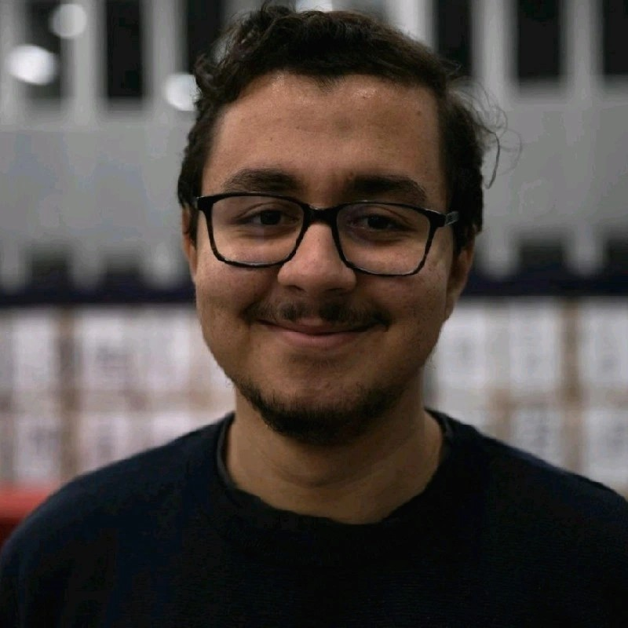

PhD student · Inria Saclay
Farouk Yartaoui
Hi, welcome to my homepage!
I’m a first-year PhD student in the SODA team at Inria Saclay, supervised by Marine Le Morvan and David Holzmüller.
I’m interested in deep learning, optimization, meta-learning, and tabular foundation models (TFMs), with a love for mathematics in general.
I’m always happy to chat about research and exchange ideas. If you have a question or a collaboration in mind, drop me a line!
